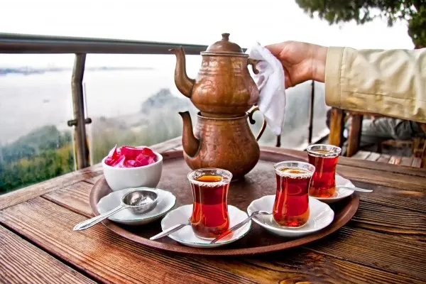
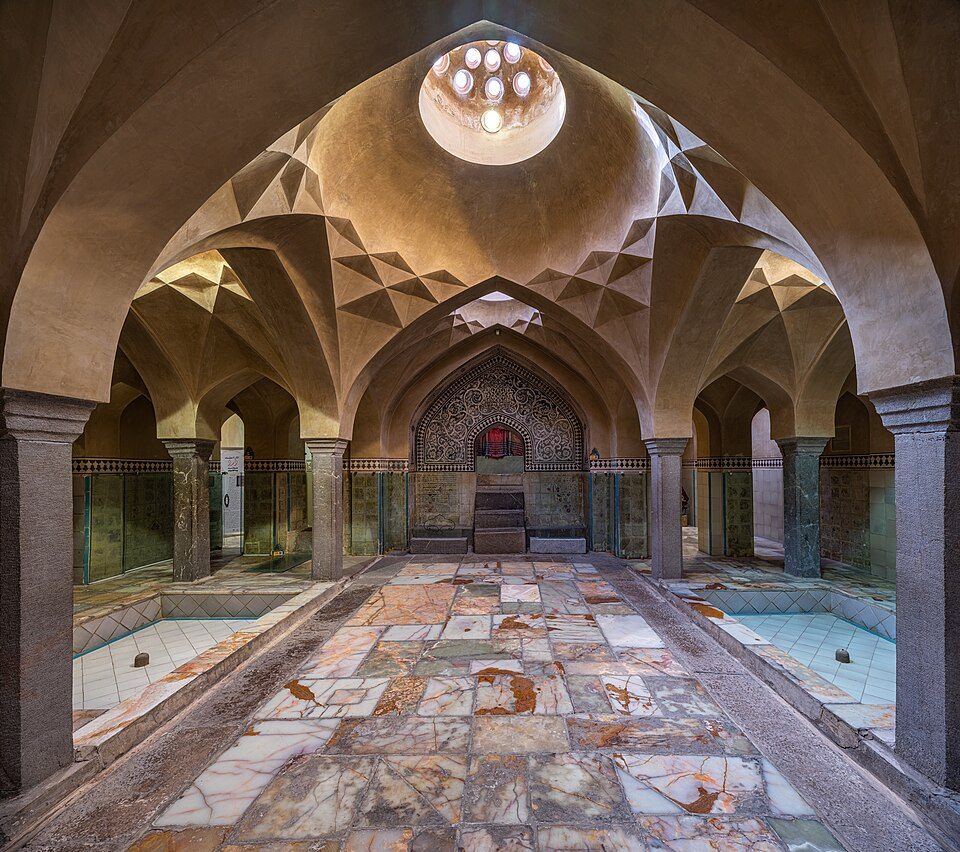
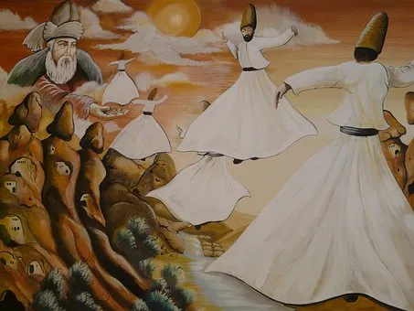
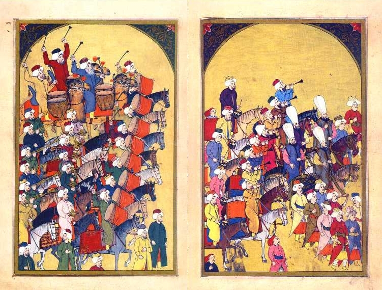
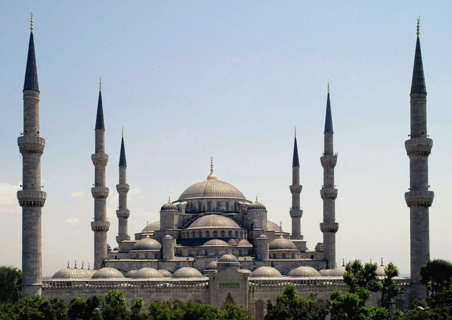
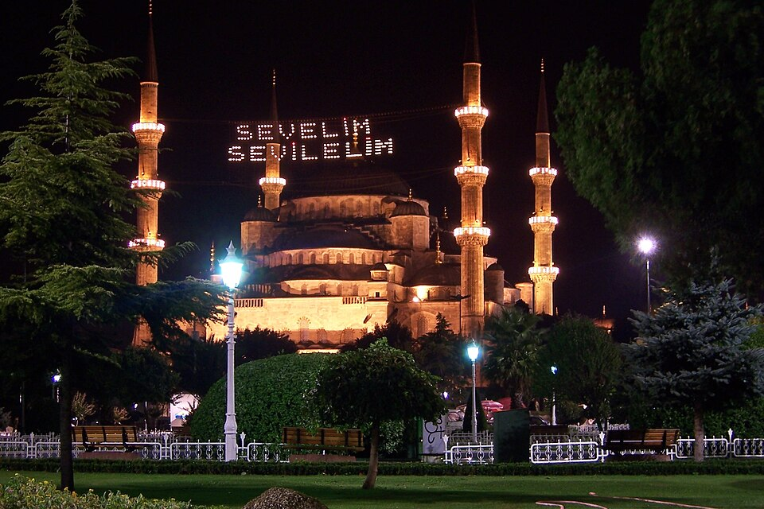
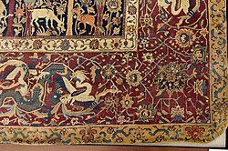

Kalligrafie: Die kunstvolle Schreibkunst ist ein wichtiger Teil der osmanischen Kultur.
Istanbul verbindet Europa und Asien, und das spürt man auch in der Kultur. Orientalische Traditionen und modernes Großstadtleben existieren hier nebeneinander. Über die Jahrhunderte haben römische, byzantinische und osmanische Einflüsse die Stadt geprägt.

Teekultur: Tee wird den ganzen Tag getrunken und Gästen immer angeboten. Er steht für Gastfreundschaft.

Hamam: Das türkische Bad hat eine lange Tradition und dient bis heute der Entspannung und Reinigung.

Derwischtanz: Beim Sema drehen sich die Tänzer in weißen Gewändern. Er stammt aus dem Sufismus.

Türkische Musik: Typisch sind Instrumente wie die Saz, eine Langhalslaute, und die Trommel Darbuka.

Islam: Die meisten Menschen sind Muslime. Fünfmal am Tag ruft der Muezzin zum Gebet.

Feste: Zucker- und Opferfest (Bayram) sind die wichtigsten Feiertage und werden mit der Familie gefeiert.
Kalligrafie: Die kunstvolle Schreibkunst ist ein wichtiger Teil der osmanischen Kultur.

Fliesen und Teppiche: Bunte Iznik-Fliesen und handgeknüpfte Teppiche schmücken Moscheen und Paläste.